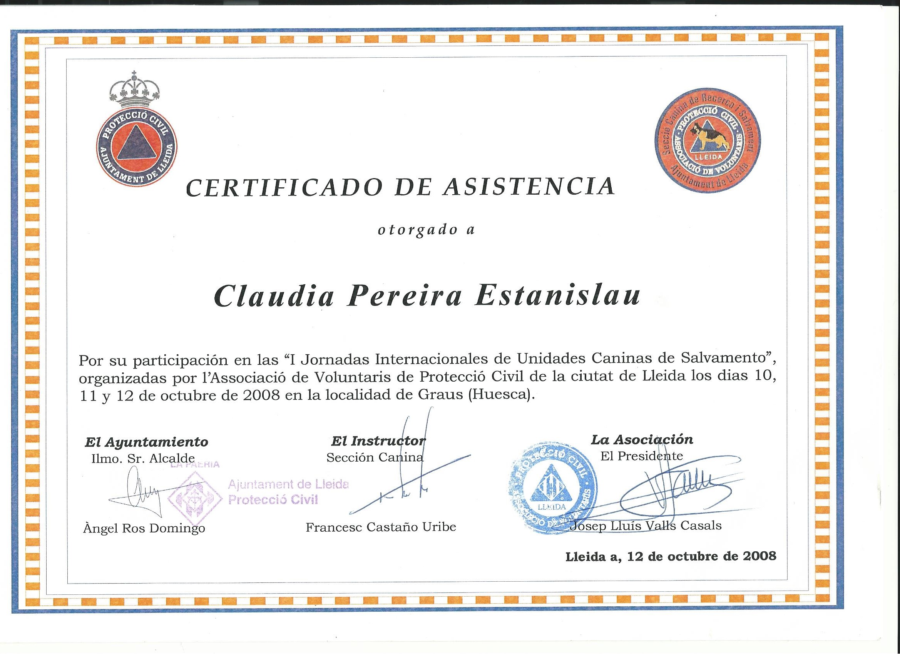
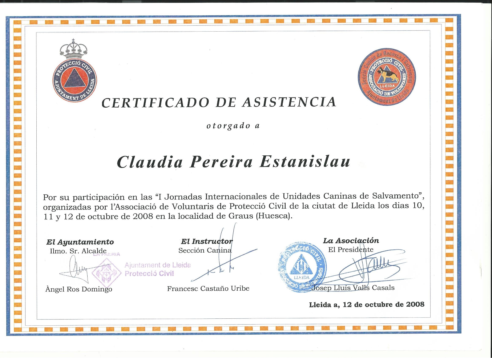
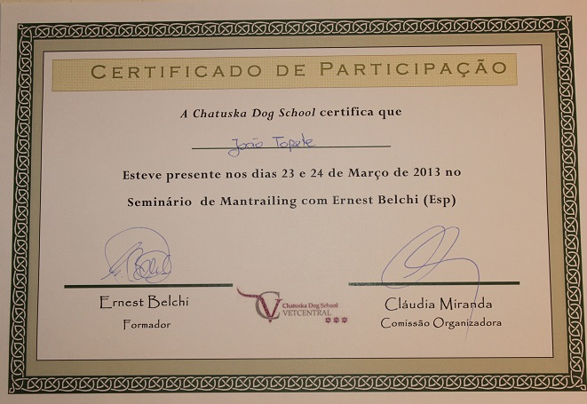
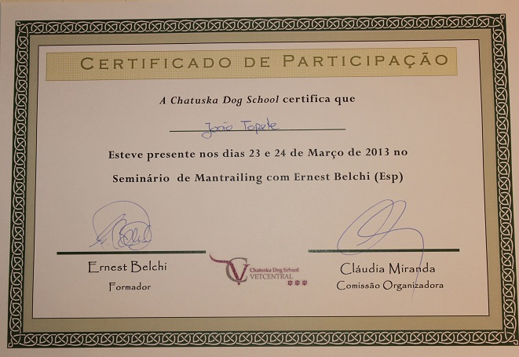

A IAAD (It’s All About Dogs) é uma escola de treino e comportamento de cães com mais de 10 anos em Portugal. Foi fundada pela treinadora especialista em comportamento de cães, Claudia Estanislau, e foi a escola que colocou o treino positivo, na vanguarda do treino de cães no país.
O nosso objectivo é oferecer um serviço da mais alta qualidade, no que toca ao treino, comportamento e educação dos cães nunca esquecendo os seus tutores. Todos os treinadores da IAAD têm diversas qualificações que pode ver no menu “Sobre nós”, todas estas sempre em linha com os últimos estudos e técnicas de treino.
A nossa escolha é sempre o reforço positivo, sendo que não usamos quaisquer tipos de métodos que causem dor, desconforto, medo ou que sejam incómodos para o seu cão. Não só estamos formados para lidar com quaisquer tipos de comportamentos usando técnicas baseadas apenas no reforço positivo, como sabemos quais as graves consequências que o uso de punições e métodos antiquados podem causar, no seu cão, no seu relacionamento com ele e no seu comportamento.
Se procura um treinador profissional e qualificado para o ajudar com o seu cão, independentemente da sua idade, raça, proveniência, usando métodos seguros, que contemplam o bem-estar do seu cão, então veio ao local correcto.
Contacte-nos para preços e outras informações, de momento temos treinadores em Santa Maria da Feira e arredores, Porto e Coimbra.


Santa Maria da Feira, São João da Madeira, Vale de Cambra, Oliveira de Azemeis, Espinho, Ovar, Esmoriz, Vila Nova de Gaia, Grande Porto, Matosinhos, Maia, Povoa de Varzim, Vila do Conde e Coimbra
91 914 33 58
itsallaboutdogs@hotmail.com
Made with by Nuno Pereira
Claudia Estanislau a criadora da empresa, começou o seu interesse por cães desde nova, fazendo voluntariado com várias instituições de recolha de animais de rua em Portugal durante a sua adolescência, nomeadamente em S. João da Madeira, Porto e Coimbra. Em 2004 mudou-se para Inglaterra e continuou o seu interesse por cães, iniciando voluntariado com uma das melhores e mais bem organizações de recolha de animais, Battersea Dog’s Home em Londres.
As suas funções dentro do voluntariado passaram do companheirismo aos variados cães que se encontravam para adopção, para funções de sociabilização e posteriormente aplicação de técnicas de relaxamento canino como a conhecida massagem TTouch, treino de comandos básicos e avaliação comportamental.
Durante o seu voluntariado na Battersea Dog’s Home, Claudia Estanislau ingressou em vários cursos de formação relacionados com sociabilização canina, treino e comportamento, despertando assim o interesse por ingressar em mais cursos e continuar a sua educação.
Em 2005 Claudia Estanislau foi para o Canada para um curso de formação de treinadores com a duração de 3 meses com Ben Kersen and the Wonderdogs. Neste curso a Claudia aprendeu técnicas de treino e resolução de problemas comportamentais caninos, deu aulas de treino de grupo e individuais.
As técnicas aprendidas no curso no Canadá eram baseadas em punições e reforço negativo e apesar de não conhecer nada mais, quando voltou a Inglaterra, a Claudia começou a ler o livro “The other end of the leash” da Patricia Macconnell e “Culture Clash” da Jean Donaldson e decidiu matricular-se no instituto CASI, presidido pelo Dr. James O’Heare, no Diploma DTBC (Dog Training and Behaviour Consulting) para aprender e aperfeiçoar técnicas e métodos baseados no reforço positivo.
Em 2006 nasce então a empresa It’s All About Dogs que teve um grande desenvolvimento em Inglaterra. A par com o trabalho desenvolvido com RSPCA onde a Claudia Estanislau se tornou Especialista em Avaliação Canina e responsável máxima pelo Apoio ao Adoptante a empresa ganhou reputação de um grande apoio quer a nível de treino básico mas acima de tudo na resolução de problemas comportamentais de cães de companhia.
A Claudia é membro da APDT, da AABP (Association of Animal Behaviour Professionals) e mais recentemente Membro internacional da PPG – Pet Professional Guild (2013).
A Claudia continua a sua formação, tendo desde a formação da sua empresa, sido oradora de diversos seminários em Portugal, durante 1 ano e meio escreveu artigos para a revista mensal Cães e Companhia e é hoje administradora também de um curso para treinadores.
Os objectivos principais da Its All About Dogs são fornecer serviços de acompanhamento para a educação e treino básico de cães para viverem em harmonia com os seus companheiros humanos.
A título individual o objectivo é informar e formar donos de cães acerca das formas mais eficazes, práticas e gentis de lidar com os cães. A Claudia tem experiência extensa em treinar e educar cães usando reforço positivo e acredita que através da informação adequada, sociabilização apropriada e acompanhamento constante e útil pode poupar a vida de muitos cães que acabam abandonados ou mortos por desenvolverem problemas que advêm da falta de conhecimento e acompanhamento capaz.
Para tal e desde a formação da empresa Claudia Estanislau tem vindo a desenvolver um trabalho extenso para providenciar de forma útil, fácil e acessível a todos essa informação através da página da no Facebook da Its All About Dogs, do Fórum da Its All About Dogs, e dos blogues “Cãosciência”, “Chamaram-me Safira” e “Diário do Cão Acorrentado”.
Neste momento encontra-se a desenvolver a sua actividade como treinadora e comportamentalista em Santa Maria da Feira, cobrindo as zonas de Santa Maria da Feira, São João da Madeira, Espinho, Vila Nova de Gaia, Porto e Matosinhos.
 

Iniciou o seu interesse pela área aquando de uma palestra em Bragança, começando nesse momento a realizar voluntariado em canis dessa área.
Contudo, apenas quatro anos depois, em 2012, sentiu que esta paixão poderia ir além de um simples passatempo e poderia tornar-se numa atividade profissional, ai ingressou o Curso de Treinadores do Hospital Veterinário do Porto e o SummerdogCamp da Educacão.
Durante o tempo que se seguiu manteve a sua formação em contínua atualização, participando em vários cursos e seminários e tentando acompanhar o trabalho dos grandes nomes do treino positivo, como Ian Dunbar, Karen Prior e Dr. Aubrey Fine.
Em Outubro de 2013, foi orador nas primeiras jornadas de comportamento e treino animal da Escola Superior Agrária de Bragança.
Em 2014, concluiu com nota de mérito o Curso de Treinadores da It’s All About dogs, após estágio na sede da IAAD com a Treinadora Cláudia Estanislau.
Neste momento encontra-se a desenvolver a sua atividade como treinador e comportamentalista em Ermesinde, cobrindo as zonas de Ermesinde, Maia, Vila do Conde, Trofa, Santo Tirso e Paredes.


 

A Vanessa sempre foi muito apaixonada pelo mundo animal, especialmente por cães. Vive nos arredores de Coimbra com os seus dois cães, a Nina e o Igor. Iniciou em 2013 o seu percurso na causa animal como voluntária na associação ARPA, que se dedica a esterilização de cães e gatos.
Formada em Psicologia Clinica e Psicoterapia desde 2012, o seu desejo em juntar paixões levou-a a frequentar a pós graduação em Terapias Assistidas por Animais.
O contacto com o mundo do treino canino começou em 2015 em formações com a Educacão e, nomeadamente, com o Dr Aubrey Fine. Durante este percurso manteve-se na área do bem-estar animal enquanto assistente de veterinária, onde percebeu o seu enorme desejo em trabalhar na área do treino e comportamento de cães.
O contacto com o mundo do treino canino começou em 2015 em formações com a Educacão e, nomeadamente, com o Dr Aubrey Fine. Durante este percurso manteve-se na área do bem-estar animal enquanto assistente de veterinária, onde percebeu o seu enorme desejo em trabalhar na área do treino e comportamento de cães.
Assim, em Outubro de 2016 ingressou no curso de treinadores da It’s All About Dogs, que concluiu em Junho de 2018 após a realização do estágio com o Treinador Nuno Pereira.
Desde então que se dedica à sua paixão pelos cães e ao treino e comportamento canino.


O curso de treinadores da IAAD existe no país há mais de 8 anos sendo um dos cursos mais exigentes e completos do país na formação de treinadores usando métodos atualizados e atuais.
É um curso ONLINE, tendo uma vertente prática muito forte feita também à distância e a possibilidade de efetuar o estágio prático presencial caso escolha fazê-lo.
O CTC da IAAD já formou dezenas de alunos em Portugal e também no Brasil, desde veterinários, a enfermeiros de veterinária e auxiliares, pessoas que queriam desenvolver uma nova carreira, amantes de cães e todo o tipo de pessoas que gostaria de aprender sobre treino e comportamento de cães.
O objectivo é capacitar os seus alunos a poderem no final, dar aulas a cachorros, aulas individuais de ensino de comportamentos e capacita-los para entenderem comportamento de cães, para poderem lidar com os diversos comportamentos que acompanham as diferentes fases da vida de um cão. A formação de alguém que se quer profissionalizar nesta área não deve cingir-se ao nosso curso, porque anualmente saem cada vez mais cursos, técnicas novas e estudos que avançam e evoluem no entendimento que temos dos cães. No entanto este curso é dos mais completos e complexos no país e é extramente exigente pelo que terá uma formação muito detalhada que será uma rampa de partida essencial para poder começar e prosseguir.
O curso está desenhado para ser online de forma a que as pessoas que tenham empregos, vida familiar e outras atividades possam aprender tudo sobre treino e comportamento de cães ao seu passo e sem o problema de se terem que deslocar para tal. No entanto, aos alunos serão requisitados exercícios práticos que serão filmados pelos mesmos, para que a escola saiba que os alunos desenvolvem as suas capacidades práticas ao mesmo tempo que o seu conhecimento teórico. Os testes práticos começam no módulo 2, o primeiro módulo é apenas teórico.
Cada módulo do curso deve ser efetuado no tempo máximo de 3 meses (isto inclui testes teóricos e práticos) sem tempo mínimo. Isto garante um ritmo justo ao aluno sendo que o mesmo tem a liberdade de fazer o curso o mais rápido que quiser. Se o aluno demorar 3 meses em cada módulo demorará no máximo de 27 meses (2 anos e 3 meses). Este será o prazo máximo que pode permanecer no curso. A maioria dos alunos demora entre 1 ano e meio e 2 anos a terminar.
O curso tem regras muito restritas que devem ser seguidas pelos alunos. O método de ensino usado no curso é socrático, especialmente no fórum onde os alunos podem colocar todas as dúvidas e questões. Os alunos não têm avaliação formal nos testes, visto não termos interesse em avaliar desta forma, mas sim guiar os alunos para aprenderem o que estamos a ensinar. Depois do teste, o aluno recebe comentários aos testes – quando necessário – que o ajudarão a melhorar ou focar-se no estudo de certas partes da matéria. Se o aluno demonstrar com os testes não ter entendido a matéria ou não conseguir efectuar os exercícios práticos, a mentora pode pedir que repita ou efetue novos exercícios e ou testes. Caso a mentora decida que o aluno não entende de todo a matéria após várias tentativas, ela irá conversar com o aluno acerca de como podem prosseguir com o curso, no interesse de ambas as partes.
O curso requer que o aluno seja uma pessoa disposta a trabalhar bastante no mesmo, ler muito e tudo, tanto a bibliografia obrigatória como o fórum, os documentos dados para estudo e todos os links e documentos mencionados pelos professores. A comunicação com a mentora do curso e os restantes professores é feita pelo fórum e comunicação via e-mail é permitida apenas para entregar testes (via Dropbox os práticos e e-mail os teóricos), para pedir extensões de tempo (no caso de não conseguirem por motivos de saúde ou outros extremos, terminar o módulo em 3 meses) e alguma urgência a nível pessoal.
Este modelo tem sido um sucesso, e para tornar o curso ainda melhor, a IAAD permite, sem custos acrescidos (excepto os pessoais de cada aluno, tais como, deslocação, alimentação e estadia) de fazer sombra a um dos treinadores da escola durante um mínimo de 200h e máximo de 400h para poderem adquirir essa destreza de capacidades adquiridas durante o curso tendo um treinador a supervisionar o seu trabalho.
A IAAD reserva-se no direito a cancelar o curso ao aluno caso este não cumpra as regras, falte o respeito aos colegas e ou professores, escola ou mentora, caso insista no uso de métodos aversivos no ensino, treino e educação de cães. A IAAD não faz devolução de valores pagos.
O curso principal custa €1200 pagos em 4 prestações de €300 cada.
€300 pagas na inscrição
€300 pagas na transição para o módulo 3
€300 pagas na transição para o módulo 5
€300 pagas na transição para o módulo 9
As especializações custam €250 cada para quem tem o curso básico e podem livremente tirar as que quiserem após o fim do curso e do diploma ser emitido. Cada especialização tem direito a um diploma.
O curso é constituído pelos seguintes módulos:
MÓDULO 1 – ORIGEM E EVOLUÇÃO DO CÃO
• Origem e evolução do cãoMÓDULO 2 – CIÊNCIA DA APRENDIZAGEM
• Condicionamento ClássicoMÓDULO 3 Parte II - TÉCNICAS DE TREINO COM CLICKER
• ShapingMÓDULO 4 – COMPORTAMENTO
• Aulas de Sociabilização de CachorrosMÓDULO 5 – DOMINÂNCIA
• O que é dominânciaMÓDULO 6 – PROTOCOLOS DE COMPORTAMENTO
• Tipos de agressividadeMÓDULO 7 – Comportamento e veterinária
• Quadros médicos que influenciam o comportamento dos cãesMÓDULO 8 - DESPORTOS
• AgilityMÓDULO 9 – MARKETING E DESENVOLVIMENTO DO NEGÓCIO
• Técnicas de marketingESPECIALIZAÇÕES
• Comportamentos AgressivosO que é a Sociabilização?
Sociabilização pode ser descrito como o processo pelo qual um animal aprende a reconhecer e interagir com a sua própria espécie (outros cães) e outras espécies (humanos, pessoas, etc..), e se acostuma e dessensibiliza a factores ambientais. Isto inclui estímulos visuais, auditivos e tácteis tais como trovoadas, campainhas, aspiradores, ruas movimentadas, escadas, tipos de chão (azulejo versus alcatifa), para nomear alguns A sociabilização também ensina o cão a comunicar efectivamente, com a sua espécie (outros cães) e com os outros.
Porque é que preciso que o meu cão seja sociabilizado?
Sociabilização é essencial para garantir que os cães cresçam com um temperamento equilibrado. Ajuda-os a lidar com novas situações que se apresentam no futuro e ajuda-os com uma variedade de pessoas e experiências dentro do seu ambiente. Ajuda, portanto a prevenir o aparecimento de problemas tais como nervosismo, medo e agressão, ansiedade por separação, obsessões compulsões e outros distúrbios comportamentais graves. A sociabilização somente é das ferramentas ao nosso dispor mais úteis que nos permite ter um cão saudável social e temperamentalmente.
Como é que posso garantir que o meu cão seja suficientemente sociabilizado?
A sociabilização começa no criador, mas isso está fora das suas mãos seja apenas consciente e informe-se acerca do criador que escolhe e ao qual recorre.
Assim que tiver o cachorro em casa deverá implementar o seu próprio programa de sociabilização expondo o seu cão ao mais variado espectro de experiências e encontros feitos de forma controlada e positiva. Esta exposição deverá começar imediatamente e ser o mais diversa possível.
Deverá continuar idealmente durante a vida do cão mas intensificar-se durante a 8ª e a 14ª semana que é o período máximo de sociabilização, durante o qual um cachorro absorve as experiências, ao passo que após esse período um cão terá a tendência a reagir aos estímulos aos invés de apenas absorvê-los.
Durante a 8ª e a 14ª semana a maioria dos cachorros não deverá sair de casa porque ainda não completaram as vacinas e podem contrair doenças; mas isso não quer dizer que não pode sociabilizar o seu cachorro.
Seja criativo e traga o máximo de pessoas a casa para que o cachorro se sociabilize às mesmas, passeie com o seu cachorro ao colo (se conseguir andar com ele ao colo, senão leve-o a dar uma volta de carro!), e deixe que as pessoas façam festas ao seu cachorro – provavelmente terá que parar muitas vezes, porque ninguém resiste a um cachorro – sociabilize-o com outros cães em sua casa, desde que conheça os outros cães e estes estejam vacinados e sejam amigáveis, não existe perigo nenhum.
Uma outra forma excelente de sociabilizar o seu cachorro é levá-lo a aulas de sociabilização de cachorros, dadas por treinadores qualificados.
Estas aulas normalmente são dadas em ambientes controlados e seguros para o seu cachorro, onde este será exposto a outros cachorros, brincar com eles, com outras pessoas e novos ambientes. Estas aulas também ensinam o dono a lidar com o cachorro nas mais diversas situações, tais como o que fazer quando ele mordisca, o que fazer quando ele salta, como ensinar a fazer as necessidades no local correcto,etc..
A Its All About Dogs, disponibiliza aulas de obediência básica.
Obediência básica ensina ao cão comportamentos básicos que facilitam a comunicação entre o dono e o seu cão e tornam a sua vivência mais fluente e adaptada à vivência de cada um. O ensino de comportamentos de obediência básica também são úteis para ensinar ao cão auto controlo e estabelecer limites e regras que evitarão que o cão desenvolva problemas de comportamento ou se torne um cão que não sabe estar nem conviver com pessoas e outros cães.
A Its All About Dogs, ensina nas aulas de obediência básica comportamentos como:
Senta
Deita
Fica
Chamamento
Andar na trela sem puxar – exercícios básicos (se o seu cão já puxa muito na trela procure um dos nossos workshops!)
Olha para o tutor
Toca
As aulas de obediência adaptam-se a cada cão e aos seus donos e o seu estilo de vida pelo que investimos mais tempo no ensino de comportamentos que sejam realmente uteis para a vivência de ambos e que o dono possa aplicar no dia-a-dia. Usualmente as aulas de obediência básica são feitas primariamente em casa do dono individualmente e posteriomente durante os passeios para que o dono aprenda a usar os comportamentos que ensinou ao cão nas situações reais do seu dia-a-dia.
Freestyle é uma modalidade que também é conhecida como “dança com cães” porque se baseia na execução de uma rotina de comportamentos que são executados ao som de uma música. Esta modalidade tem desenvolvido adeptos por todo o mundo de uma forma entusiasmante, freestyle ou heelwork to music como também é conhecido oferece um espectáculo fantástico a quem vê e é extremamente divertido para quem pratica tanto para os donos como para os cães.
Na base deste desporto, está o ensino de todo o tipo de comportamentos, desde o junto, deita, senta, toca, fica, envios direccionais, olha, trote, dar a pata, caminhar nas duas patas, busca de objectos, chamamentos, etc… Todos estes comportamentos são conjugados com uma musica e contam normalmente uma história. É um desporto complexo e muito completo.
A Its All About Dogs, desenvolve aulas de freestyle, na quais ensina diversos comportamentos de freestyle aos donos e seus cães, em variados níveis, começando do básico ao mais desenvolvido.
Se o seu cão demonstra comportamentos agressivos, entre em contacto connosco. Somos especialistas em comportamentos agressivos em cães, e podemos ajudar, a modificar os comportamentos dos mesmos de forma a melhorar a sua vivência com o seu cão e fazer o seu companheiro de quatro patas mais feliz.
Modificação comportamental é um processo gradual e conforme o comportamento usualmente exige muita dedicação por parte dos tutores que irão integrar o protocolo e deverão seguir as indicações do treinador de forma a chegar aos objectivos desejados.
Modificar comportamentos exige muita experiência e muito conhecimento. A IAAD trabalhar há mais de 15 anos nesta área tendo ajudado dezenas de cães interagirem melhor com os estímulos que eram previamente problemáticos para os mesmos.
Contacte-nos assim que o seu cão demonstrar qualquer tipo de comportamento agressivo, quanto mais rápida for a intervenção dos profissionais, mais rápida e eficaz será a modificação do comportamento. Quanto mais tempo deixar passar, pior o comportamento se tornará e mais complexo e moroso será o processo de treino. Envie-nos um e-mail para itsallaboutdogs@hotmail.com para mais informações e preços
O seu cão apresenta comportamentos fóbicos em relação a algo? Os cães podem ter medo dos mais diversos estímulos, desde pessoas, a crianças, outros cães, sons, eventos, etc.. Se é este o caso do seu cão, nós podemos ajudar. É possível através de técnicas baseadas no reforço positivo fazer um cão ganhar confiança e perder o medo dos estímulos dessa forma mudando, também, o seu comportamento.
Fobias e medos excessivos podem tornar a vida do seu cão um pesadelo e a sua também. Procure ajuda o mais rapidamente possível enviando um e-mail para itsallaboutdogs@hotmail.com para podermos começar o treino e tornar o seu cão um confiante e pronto para uma nova vida.
“A maioria dos cães que se torna destrutivo quando estão sós, estão a roer por recreação. Muitos cães têm níveis pequenos mas discerníveis de depressão – desapontamento é uma boa palavra – quando deixados sós. Alguns cães, no entanto, desenvolvem uma desordem baseada na ansiedade, ansiedade por separação. Enquanto um cão aborrecido pode roer e brincar enquanto está só, um cão que está a ter um autêntico ataque de pânico podem magoar as patas e partir os dentes enquanto cavam e roem pontos estratégicos de saída como portas.”
Ansiedade por separação é um problema grave experienciado pelos cães e pelos donos que o vivem. Um cão com ansiedade por separação é um cão constantemente em stress e ansiosoOs cães detectam os padrões no nosso comportamento que indiciam que vamos sair de casa e que eles vão ficar sós e a ansiedade escala até um ponto que eles se tornam incontroláveis
Cães que sofrem de ansiedade por separação não sabem estar sós, é um estado comum em cães que não foram habituados a estarem sós quando novos ou em cães de canil que foram previamente abandonados. Para evitar o problema devemos ensinar os cães desde cachorros que têm inevitavelmente que ficar sós, começando por curtos períodos de tempo e gradualmente aumentado.
Procure ajuda o mais rapidamente possível enviando um e-mail para itsallaboutdogs@hotmail.com para podermos começar o treino e tornar o seu cão um confiante e pronto para uma nova vida.
Pet-sitting com a It’s All About Dogs, é um pet sitting fora do normal. O que oferecemos aqui são umas férias ao seu cão. Enquanto você vai de férias, nós fazemos o mesmo ao seu cão, aqui em casa oferecemos ao seu cão a possibilidade de experienciar tudo aquilo que o fará aproveitar o tempo longe dos donos da melhor forma.
O objectivo do pet sitting da IAAD é mais do que “tomar conta dos cães” é que estes possam divertir-se e ter experiências novas. Enquanto os donos passam alguns dias ou muitos dias longe, os cães que vêm para a nossa casa, podem ter a certeza que não irão nunca ser fechados em canis, onde como na maioria dos hotéis para cães permanecem fechados a grande maioria do tempo, sem verem ninguém e sem terem qualquer tipo de estimulação. Para muitos cães o ambiente de hotel canino é muito stressante.
Aqui em nossa casa os cães têm companhia humana a grande, senão, todo o tempo que aqui estão. Têm acesso a toda a nossa casa, incluindo, jardim da frente, terreno nas traseiras, cozinha, sala e muitos acabam a dormir nos quartos connosco à noite quando já estão cansados.
Os cães são passeados fora da propriedade todos os dias sem excepção, onde podem correr, brincar, nadar e desgastar energias, sempre na companhia de treinadores e outros cães.
Por isso as férias IAAD são de facto algo memorável para muitos dos nossos clientes e como sabemos que os clientes que colocam os cães em nossa casa, são pessoas que se preocupam imenso com o bem-estar dos seus cães, tiramos muitas fotos, videos e postamos na nossa página de FB quase um diário de como são os dias dos nossos amigos.
Existem algumas exigências para poder ter um pet sitting deste tipo:
– Só aceitamos cães ou cadelas esterilizados
– Só aceitamos cães ou cadelas que sejam sociáveis com outros cães (salvaguarda cães que sejam nossos clientes e com os quais já trabalhamos)
– Só aceitamos cães que queiram divertir-se muito!
Vantagens destes tipos de pet-sitting face aos hotéis:
O seu cão NUNCA estará trancada numa jaula ou canil. Estará sempre livre para circular na nossa casa e pátio, ou na sua casa e nos locais onde habitualmente está.
O seu cão terá exercício físico adequado, sendo que não se limitará nunca a apenas 1h de exercício, mas sim vários passeios por dia e com outros cães e interacção social constante com outros cães e pessoas.
O seu cão terá acesso a contacto humano constante durante a sua ausência assim como jogos de estimulação mental (puzzles, quebra-cabeças, ensino de truques).
O seu cão não terá que ouvir o ladrar incessante e típico de outros cães que se encontram nos canis, que pode ser um ambiente que causa extrema ansiedade em muitos cães.
Os Pet-sittings não incluem:
Alimentação dos cães, ossos para roer e/ou outros brinquedos (estes deverão ser combinados com antecedência com a treinadora), trelas ou coleiras.
O curso de treinadores da IAAD existe no país há mais de 8 anos sendo um dos cursos mais exigentes e completos do país na formação de treinadores usando métodos atualizados e atuais.
É um curso ONLINE, tendo uma vertente prática muito forte feita também à distância e a possibilidade de efetuar o estágio prático presencial caso escolha fazê-lo.
O CTC da IAAD já formou dezenas de alunos em Portugal e também no Brasil, desde veterinários, a enfermeiros de veterinária e auxiliares, pessoas que queriam desenvolver uma nova carreira, amantes de cães e todo o tipo de pessoas que gostaria de aprender sobre treino e comportamento de cães.
O objectivo é capacitar os seus alunos a poderem no final, dar aulas a cachorros, aulas individuais de ensino de comportamentos e capacita-los para entenderem comportamento de cães, para poderem lidar com os diversos comportamentos que acompanham as diferentes fases da vida de um cão. A formação de alguém que se quer profissionalizar nesta área não deve cingir-se ao nosso curso, porque anualmente saem cada vez mais cursos, técnicas novas e estudos que avançam e evoluem no entendimento que temos dos cães. No entanto este curso é dos mais completos e complexos no país e é extramente exigente pelo que terá uma formação muito detalhada que será uma rampa de partida essencial para poder começar e prosseguir.
O curso está desenhado para ser online de forma a que as pessoas que tenham empregos, vida familiar e outras atividades possam aprender tudo sobre treino e comportamento de cães ao seu passo e sem o problema de se terem que deslocar para tal. No entanto, aos alunos serão requisitados exercícios práticos que serão filmados pelos mesmos, para que a escola saiba que os alunos desenvolvem as suas capacidades práticas ao mesmo tempo que o seu conhecimento teórico. Os testes práticos começam no módulo 2, o primeiro módulo é apenas teórico.
Cada módulo do curso deve ser efetuado no tempo máximo de 3 meses (isto inclui testes teóricos e práticos) sem tempo mínimo. Isto garante um ritmo justo ao aluno sendo que o mesmo tem a liberdade de fazer o curso o mais rápido que quiser. Se o aluno demorar 3 meses em cada módulo demorará no máximo de 27 meses (2 anos e 3 meses). Este será o prazo máximo que pode permanecer no curso. A maioria dos alunos demora entre 1 ano e meio e 2 anos a terminar.
O curso tem regras muito restritas que devem ser seguidas pelos alunos. O método de ensino usado no curso é socrático, especialmente no fórum onde os alunos podem colocar todas as dúvidas e questões. Os alunos não têm avaliação formal nos testes, visto não termos interesse em avaliar desta forma, mas sim guiar os alunos para aprenderem o que estamos a ensinar. Depois do teste, o aluno recebe comentários aos testes – quando necessário – que o ajudarão a melhorar ou focar-se no estudo de certas partes da matéria. Se o aluno demonstrar com os testes não ter entendido a matéria ou não conseguir efectuar os exercícios práticos, a mentora pode pedir que repita ou efetue novos exercícios e ou testes. Caso a mentora decida que o aluno não entende de todo a matéria após várias tentativas, ela irá conversar com o aluno acerca de como podem prosseguir com o curso, no interesse de ambas as partes.
O curso requer que o aluno seja uma pessoa disposta a trabalhar bastante no mesmo, ler muito e tudo, tanto a bibliografia obrigatória como o fórum, os documentos dados para estudo e todos os links e documentos mencionados pelos professores. A comunicação com a mentora do curso e os restantes professores é feita pelo fórum e comunicação via e-mail é permitida apenas para entregar testes (via Dropbox os práticos e e-mail os teóricos), para pedir extensões de tempo (no caso de não conseguirem por motivos de saúde ou outros extremos, terminar o módulo em 3 meses) e alguma urgência a nível pessoal.
Este modelo tem sido um sucesso, e para tornar o curso ainda melhor, a IAAD permite, sem custos acrescidos (excepto os pessoais de cada aluno, tais como, deslocação, alimentação e estadia) de fazer sombra a um dos treinadores da escola durante um mínimo de 200h e máximo de 400h para poderem adquirir essa destreza de capacidades adquiridas durante o curso tendo um treinador a supervisionar o seu trabalho.
A IAAD reserva-se no direito a cancelar o curso ao aluno caso este não cumpra as regras, falte o respeito aos colegas e ou professores, escola ou mentora, caso insista no uso de métodos aversivos no ensino, treino e educação de cães. A IAAD não faz devolução de valores pagos.
O curso principal custa €1200 pagos em 4 prestações de €300 cada.
€300 pagas na inscrição
€300 pagas na transição para o módulo 3
€300 pagas na transição para o módulo 5
€300 pagas na transição para o módulo 9
As especializações custam €250 cada para quem tem o curso básico e podem livremente tirar as que quiserem após o fim do curso e do diploma ser emitido. Cada especialização tem direito a um diploma.
O curso é constituído pelos seguintes módulos:
MÓDULO 1 – ORIGEM E EVOLUÇÃO DO CÃO
• Origem e evolução do cãoMÓDULO 2 – CIÊNCIA DA APRENDIZAGEM
• Condicionamento ClássicoMÓDULO 3 Parte II - TÉCNICAS DE TREINO COM CLICKER
• ShapingMÓDULO 4 – COMPORTAMENTO
• Aulas de Sociabilização de CachorrosMÓDULO 5 – DOMINÂNCIA
• O que é dominânciaMÓDULO 6 – PROTOCOLOS DE COMPORTAMENTO
• Tipos de agressividadeMÓDULO 7 – Comportamento e veterinária
• Quadros médicos que influenciam o comportamento dos cãesMÓDULO 8 - DESPORTOS
• AgilityMÓDULO 9 – MARKETING E DESENVOLVIMENTO DO NEGÓCIO
• Técnicas de marketingESPECIALIZAÇÕES
• Comportamentos AgressivosDe forma a satisfazer os clientes que não conseguiram assistir em directo aos nossos Webinarios a It’s All About Dogs decidiu disponibilizar as suas gravações para que todos os possam assistir.
A duração das gravações é de cerca de 1 hora e meia e apenas necessita de um computador com acesso à internet para as poder assistir.
O valor de cada gravação é de 30€
Gravações de Webinarios disponíveis :
– Como treinar um chamamento imbatível
– Aprenda a falar canês (comunicação canina)
– O meu cão “protege” a sua comida e ossos o que faço?
– Como ensinar um cão a fazer as necessidades no local correcto
– Como ensinar um cão a andar na trela sem puxar
– As 5 coisas mais importantes para o treino eficaz do seu cão
– Como posso estimular mentalmente o meu cão